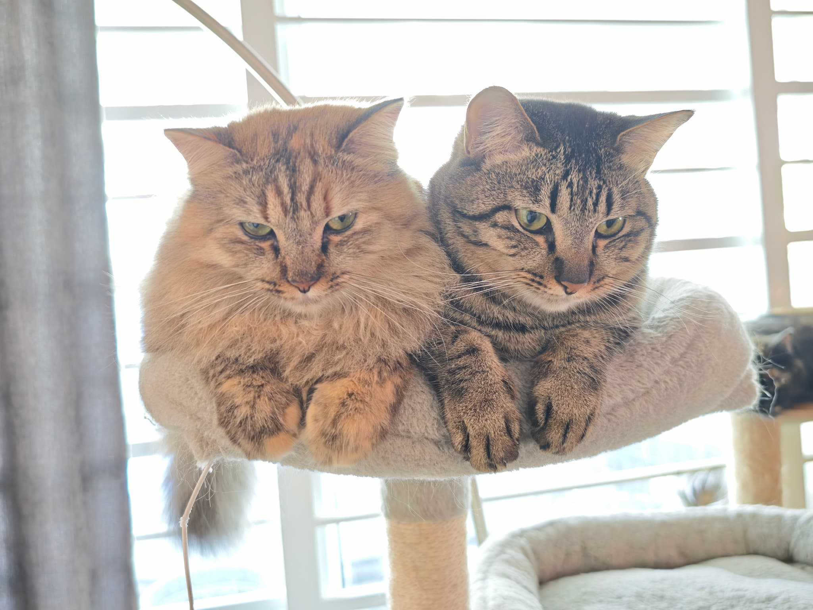

Chapter One
肥婆的二儿子
虎斑仔是肥婆的孩子，在我们家出生，从小在我们眼皮底下长大。
按理说，从小看着你长大的猫，应该是最亲近的。但虎斑仔偏偏不是这样。
他活泼，爱玩，爱吃，整天在家里跑来跑去，存在感极强。但你想摸他？他立刻走开。你靠近？他保持距离。他就是这样的猫——可以在你旁边，但不让你碰。

虎斑仔在猫树上 · 高高在上，俯视一切
「为学日益，为道日损」
— 道德经·第四十八章
Chapter Two
触之即逃的禅公案
养了虎斑仔这么多年，我慢慢明白一件事——
他不是不爱你。他只是有他自己的方式。
禅宗有个公案：本来面目。意思是一个人最真实的样子，不被外界定义，不被期望改变。虎斑仔就是这样——他是他自己，不是你期待的那只"应该让人摸的猫"。
你越追，他越走。你放下，他反而靠近。这就是禅，也是虎斑仔教我的道。

左：虎斑仔和萌萌哒，家里最好的兄妹 · 右：高处不胜寒
✦
Chapter Three
小白离世前的那一晚
小白病重的最后一晚，我们把他抱出来。
虎斑仔靠了过来。
那只平时不让人摸、不让猫靠近的虎斑仔，那一晚静静地窝在小白身边，陪着他。没有人叫他来，没有人知道他懂不懂发生了什么。
但他来了。

小白离世前一晚 · 虎斑仔静静陪伴 · 无言的告别
Chapter Four
原来他一直都懂
那一晚之后，我对虎斑仔的理解变了。
他不是冷漠。他只是不擅长表达。但在最重要的时刻，他选择出现了。
道家说，上善若水，水善利万物而不争。虎斑仔平时不争不抢，不要求被摸被抱。但那一晚，他用自己的方式，给了小白最后的陪伴。
这才是他真实的样子。